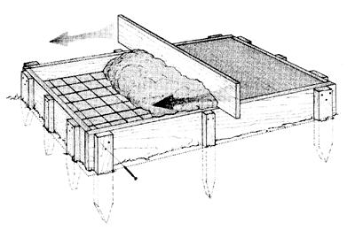
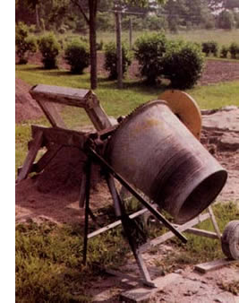

Call concrete a pillar of civilization. It's unbeatable for making smooth, flat, strong, all-weather surfaces. Concrete pads make the best floors for garages, sheds and workshops. Outdoor paths and driveways can be made beautiful by pressing a textured rubber mat into still soft, colored concrete. The convincing patterns of paving bricks or flagstones left behind look great and come at a fraction of the trouble of the real thing.
But despite the advantages, there's still some mystery surrounding concrete in the do-it-yourself community. Homesteaders are sometimes afraid to use it on their own. Perhaps this is because most of the visible concrete jobs are big, commercial affairs surrounded by roaring ready-mix trucks and a lot of wildly gesticulating, dirt-caked workers. The first thing to understand is that backyard concrete work isn't the same cross between rocket science and pyramid building that commercial construction sites appear to be.
Using concrete to make your place better is a simple, three-part process any ablebodied person can handle. The first phase-building forms to contain and shape the material-is one of the easiest carpentry tasks going. Mixing concrete, or arranging to have some ready-mix delivered, is just like dealing with a whole bunch of pancake batter. And the third part - the fun you'll have smoothing and finishing the concrete - should remind you of the good old days when you had a single-digit age and an interest in sneaking a garden hose into the sandbox to joyously wet and smooth a pile of muck.
Concrete is a moistened mixture of three dry ingredients: Portland cement, sand and crushed stone, in roughly a 1-2-4 blend. You can buy small quantities of dry, just-add-water concrete mix in 50-pound paper bags, but this costs way too much to be practical for even the smallest pad. In the do-it-yourself, pad-pouring game you need to decide between two other concrete procurement options: site mixed concrete you make yourself by combining ingredients in an electric- or gas-powered drum mixer, or readymixed, truck-delivered concrete like the big boys use.
I prefer mixing onsite when the job requires less than, say, two dozen full wheelbarrow loads of concrete at a time.
After that, visions of ready-mix phone numbers dance in my head. You can rent a small drum-type mixer from any rental or buy a brand new electric-powered one for less than $300. That probably sounds too cheap if you have a lot of work planned, but don't be worried by the low price; fifteen years ago I bought a 3 1/2-cubic-foot mixer, and after churning out hundreds of wheelbarrow loads of concrete and mortar it still works perfectly. The only trouble I've had was a drive pulley that snapped when the mixer crashed to the ground - a disastrous result of my attempt to single-handedly wheel it up a ramp onto my pickup truck. Maintenance? Just a few shots of grease in the fittings around the drum and gear shaft.
Small, onsite mixers will make about half a large wheelbarrow load of concrete at a time, taking 15 or 20 minutes per batch.
Site-mixing lets you pace the job yourself, without the hassle of directing a full size cement truck into your back yard. On the other hand, you still need to have sand, cement and crushed stone trucked in, and then you have to shovel it into the mixer. As far as dollars and cents go, mixing it yourself might save you 10 percent to 20 percent over ready-mix.
Ready-mix, truck-delivered concrete offers two advantages: convenience and superior formulation. The disadvantage is the size of check you'll write when the project is all done. Since the cost of ready-mix varies, sometimes wildly, shop around, especially if you stumble onto a supplier who demands a home delivery surcharge. Not all do. Where I live, the cost of concrete dropped from more than $110 per cubic yard in the late 1980s to about $85 per cubic yard after a second concrete company opened shop in the area. (Competition's great, as long as it's not in your business.)
Besides deciding on how much readymix to order (the desk jockey at the plant can help you calculate that), you have two other options to consider, both of which you should ask for by name. The first is the addition of reinforcing fibers into the concrete mix. These are synthetic strands added at the plant to increase the tensile strength of the hardened product. Fiber costs a bit more, but it's worth it, especially for outdoor pads. Another thing to ask for is air entrainment. This is the incorporation of a controlled amount of tiny air bubbles into the concrete while it's mixed. This boosts the ability of the hardened pad to resist frost-induced flaking, a common cause of concrete failure.
If you've ever visited a tropical area, perhaps you've noticed how good the concrete looks. The reason is the lack of subzero temperatures and all the havoc they wreak on concrete in colder parts of the world.
When you're preparing a site for a concrete pad in areas that receive winter weather, you're fighting against the tendency for soil to heave up and down as it freezes and thaws, which cracks concrete. You could completely solve this problem by preparing a foundation for your pad that would extend down into the soil below the frost line, but this isn't practical for a pad of any size. You have to attack the problem by combining several strategies.
The first is site preparation. The reason soil heaves when it freezes is because it contains water. Dry soil won't heave at all, no matter how cold it gets. That's why in frost-prone regions you should start any pad-pouring project by replacing the soil directly under the area with a compacted layer of something coarse, like crushed stone. This promotes drainage that reduces the heaving hazard. How deep should you go? Six to 12 inches is the general advice. This won't get you under the frost line, but it will remove the most active soil. To prevent settling after the concrete has been poured, any coarse fill you add to a pad area must be compacted mechanically using a gas-powered compactor. Otherwise, the settling would cause cracking, too.
One of the personal faults I cherish is my tendency to overbuild things. I plead guilty, but with an excuse. I've seen enough disappointing building projects to understand that when something is made just barely robust enough, it usually fails fast. Building things beefier than necessary is the best way to beat the ravages of time. This is why I like to make concrete pads thicker than absolutely necessary, using 2-by-6 lumber placed on edge as forms.
Start by laying the straightest 2-by-6s you have along the side of your pad zone, on edge, beginning in one corner and working from there. Save the crooked lumber for later, crosscutting them when you need some shorter pieces. All these 2-by-6s create the wooden walls that'll contain the concrete while it cures, yielding a pad thickness of about 5 1/2 inches. Use sharpened 18-inch-long 2-by-2 stakes, pounded into the soil using a sledge hammer, around the outside face of the forms to hold the 2-by-6s in place as you go. Position these stakes every 3 or 4 feet, using a wider 2-by-4 stake at the ends of each pair of form boards to lend wider support where neighboring boards meet. Continue laying form boards and pounding stakes until you've completed the circuit. Equalizing diagonal measurements taken corner to corner will assure you've got 90-degree corners.
Notice how I haven't mentioned anything about fastening the form boards to the stakes yet? Before using 3 1/2-inch deck screws to secure the form boards to the stakes, draw some reference lines on the inside faces of the stakes to guide up-and-down form board placement. For level pads less than 10 feet across, use a 4-foot carpenter's level to transfer reference lines from stake to stake. For bigger pads use a water level for greater accuracy. The pros use a surveying tool called a transit for leveling work like this. Rent-all stores carry them. The newest type is easy to use and features visible laser beams to transfer elevations.
Complete the form building by slicing off the ground stakes flush with the top edge of the 2-by-6 form boards using a handsaw. Leveling the concrete after the pour requires the top edge of the form boards to be uncluttered so you and a helper can drag a long piece of lumber across to level the concrete. Naturally, the stakes have to be out of the way for this to happen.
If you're mixing your own concrete using the 1-2-4 cement, sand and crushed stone recipe, make sure to keep it on the dry side. Adding too much water makes concrete easier to work with, but also ultimately weaker. The ideal mix should have the stiff texture of chocolate chip cookie dough.
Pouring is the fun part. Start by dumping wheelbarrow loads of concrete into the form, starting at one side and working across. Use a garden rake to work the concrete into every corner, half way up the sides of the form. Now lay metal reinforcing mesh onto the concrete, before covering it up with more concrete to a level slightly higher than the form sides. Concrete mesh is available at any building supply store. It'll increase pad strength and resistance to cracking.
If your form is narrower than 3 or 4 feet, use a hammer to tap the sides to introduce vibration that'll compact and strengthen the concrete before it hardens. Pads wider than 36 inches should be compacted with an electric concrete vibrator. Some ready-mix companies offer the use of these as a customer courtesy, otherwise get one for the day at a rent-all.
You'll also need some help dragging a straight 2-by-6 across the top of the forms on edge (an operation called screeding), to level the concrete. The surface will start drying out in an hour or so, and that's when you should screed the surface again, giving it the final finish.
Hardware stores everywhere sell something called an edger - the hand tool you'll need if you want the kind of rounded edges you can see on sidewalks. A few weeks after the pour, rent a gas-powered masonry saw and cut 2-inch-deep, crack-control grooves in the top of the pad, every 10 or 12 feet. If the pad does fall victim to frost heaving, it'll crack along these lines in a controlled and harmless way.
Textured concrete is one outdoor surface option that deserves more attention than it gets. It goes down quickly, is reasonably priced and offers more visual choices than interlocking brick. There are trades people who specialize in textured concrete installations that look like cobblestone, bricks and random flagstone, but the process is practical for any ambitious do-it-yourselfer. In fact, it's one of the best outdoor-surface options around.
Besides concrete and wooden forms, you'll need three things to get going: a textured rubber mat, something to pound the mat down into the concrete with (you can make your own pounder out of a 12-by-12-inch piece of 3/4-inch plywood with a 2-by-2 handle) and a powdered release agent to prevent the concrete from sticking to the mat. You may not find any of these at your local building center, but that's OK. L.M. Scofield Co. is one company that supplies textured concrete products continentwide. Look in the phone book or do an Internet search for more options.
The time to use the texturing mat is when the concrete has lost some surface sheen from drying, yet is still soft. Use the mat too soon and water will rise to the surface, weakening the top layer. Use the mat too late and you won't get crisp details. Sprinkle an even coat of powdered release agent on the concrete, lay the mat down, then drive it into the concrete with multiple blows from your pounding tool. Lift the mat slowly, reapply some release agent and repeat in the next spot over. If you live in an area that gets freezing weather, seal the surface with a water repellent after the concrete has cured for month. Preventing water absorption stops the surface chipping and flaking, or spalling, which eventually ruins so much concrete.
|
PHOTO BY STEVE MAXWELL A walking path is just one of the handy additions you can make to your home as a backyard concrete project. |
 ILLUSTRATION BY MELANIE POWELL Screeding the pad: With one person on each side of the board, work the board across the final layer of concrete to smooth the surface. |
 PHOTO BY STEVE MAXWELL You can rent or buy gas-or electric-powered cement mixers like this one for small jobs, or have a truck deliver ready-mixed concrete for big projects. |